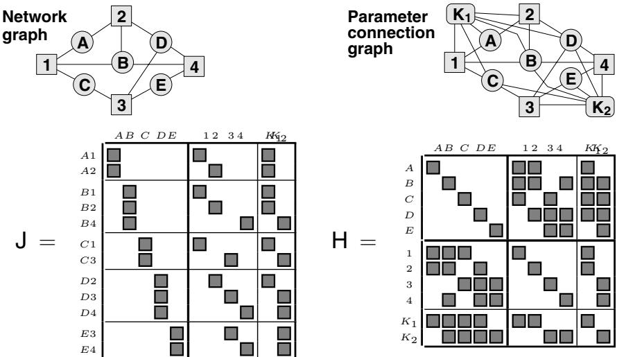
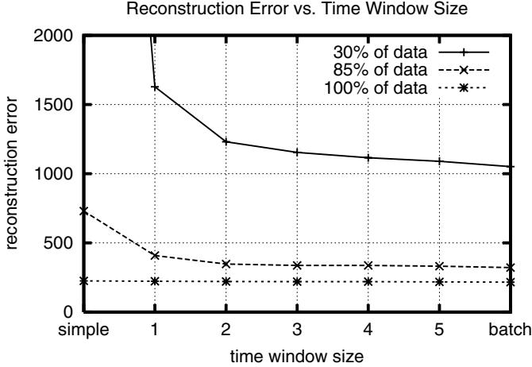
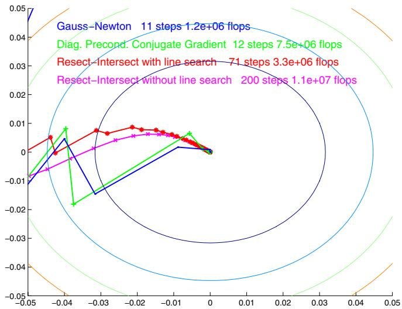

「All worthwhile bundle methods exploit at least the primary structure, and advanced methods exploit the secondary structure as well.」（所有值得用的 BA 方法至少利用了主层结构，而先进的方法连次层结构也一起利用。）这句话是下一节 Schur 消元的理论动机。

原图注（Fig. 3）：The network graph, parameter connection graph, Jacobian structure and Hessian structure for a toy bundle problem with five 3D features A–E, four images 1–4 and two camera calibrations $K_1$ (shared by images 1,2) and $K_2$ (shared by images 3,4). Feature A is seen in images 1,2; B in 1,2,4; C in 1,3; D in 2–4; and E in 3,4.（一个玩具 BA 问题的网络图、参数连接图、雅可比结构与海森结构：五个三维特征 A–E、四张图 1–4、两个相机标定 $K_1$（图 1,2 共享）与 $K_2$（图 3,4 共享）。特征 A 见于图 1,2；B 见于 1,2,4；C 见于 1,3；D 见于 2–4；E 见于 3,4。） 怎么看这张图：这是本节头号图，四联图要从左看到右：① 网络图（谁看见谁）→ ② 参数连接图（变量间的依赖）→ ③ 雅可比结构（哪些残差依赖哪些变量）→ ④ 海森结构（变量两两是否耦合）。重点盯第④张：你会看到「结构变量之间彼此不相连」（块对角），而「结构↔相机」之间只在确实可见的地方有非零块。这就是两层稀疏的具象化。
原文提醒：Brown 1958 的原始方法就是这个——构造 reduced camera system 再做高斯消元；Profile Cholesky（轮廓乔列斯基）只是更流畅的等价写法。图特别多的时候，反过来消掉相机、留下 reduced structure system 也行。§6.3 还有一句警句：Schur 过程一旦定下来，唯一的自由度就只剩变量排序——这就引出下一节。
原图注（Fig. 4）：A bundle Hessian for an irregular coverage problem with only local connections, and its Cholesky factor in natural (structure-then-camera), minimum degree, and reverse Cuthill-McKee ordering.（一个只有局部连接的不规则覆盖 BA 问题的 Hessian，及其在 natural（先结构后相机）、minimum degree、reverse Cuthill-McKee 三种排序下的 Cholesky 因子。） 怎么看这张图：这是 Fig. 4 四联图中的第一张（Hessian 本体）。先记住它的样子：黑点集中在对角线附近、呈块状。它展示的是一个「只有局部连接」的稀疏 Hessian，为后面三张不同排序的 Cholesky 因子做对照基准。
原图注（Fig. 8）：Gauge orbits in state space, two gauge cross-sections and their covariances.（状态空间中的规范轨道、两个规范横截面及其协方差。） 怎么看这张图：把状态空间想成一个大房间，每条「规范轨道」是一根弯曲的线（同一几何的不同坐标表示）。「规范横截面」就是横切这些线的一个平面——每条线只在平面上留一个点。图里给了两个不同横截面，并画出各自的协方差椭球：椭球的形状会变，但轨道本身（几何）不变。这就是 gauge freedom 最直观的画像。
互动判断
关于 gauge freedom，下面哪句话是对的？
6. 鲁棒估计：对「先剔除再优化」的批评
这一节接上第 0014 课的外点话题，从 BA 侧讲另一半。原文（§3.1 + §10）的立场相当锋利。
§3.1：ML 估计天然鲁棒
原文原话：ML estimation is naturally robust: there is no need to robustify it so long as realistic error distributions were used in the first place.——也就是说，只要你一开始就用了现实的误差分布（比如第 0018 课说的「内点+外点」混合密度），最大似然估计本身就够鲁棒了。做法是把内点和外点建成一个 total distribution（总体分布），「There is no need to separate the two classes」（没必要把两类分开）。外点可以在拟合后用似然比检验标注出来，但那「in no way essential（绝非必要）」。
§10.2：先剔除再优化，只是迂回地模拟鲁棒代价
原文对「先定个阈值把外点删掉、再做最小二乘」这种做法，给出了必引的批评：
原文批评（务必引用）
「The net result is a form of M-estimator routine with an abruptly vanishing weight function: outlier deletion is just a roundabout way of simulating a robust cost function.」（最终结果只是一种「权重函数 abrupt 归零的 M 估计子 routine」：删外点只不过是在迂回地模拟一个鲁棒代价函数。）
原文（§8 的 VSDF 递推实验）还顺带回答了「滑窗（rolling time window）该开多大」。看 Fig. 7：

原图注（Fig. 7）：The residual state estimation error of the VSDF sequential bundle algorithm for progressively increasing sizes of rolling time window. … The main conclusion is that window size has little effect for strong data, but becomes increasingly important as the data becomes weaker.（VSDF 序列 BA 算法在滚动时间窗逐渐增大时的残差状态估计误差……主要结论是：窗大小对强数据影响很小，但随着数据变弱变得愈发重要。） 怎么看这张图：横轴是窗大小、看残差误差。在「强数据」曲线上，窗一大就平了（再大没用）；在「弱数据」曲线上，窗越大误差才持续下降。这正好呼应后面要学的 fixed-lag smoothing（固定滞后平滑）：弱观测时，多保留历史帧能显著救回精度。
同时你还顺手拿到了两个利器：gauge freedom（为什么 BA 解不唯一、怎么固定）和鲁棒核（为什么「删外点」只是笨拙地模拟鲁棒代价）。它们分别是「坐标框架」和「外点」这两个维度上，SLAM 后端的深层地基。

原图注（Fig. 5）：An example of the typical behaviour of first and second order convergent methods near the minimum. This is a 2D projection of a small but ill-conditioned bundle problem along the two most variable directions.（一阶与二阶收敛方法在极小点附近典型行为的例子；一个小而病态 BA 问题沿两个最可变方向的二维投影。） 怎么看这张图：这里再放一次 Fig. 5，是为了收口上一节「二阶法为什么占主导」：二阶法（牛顿/LM）沿着被压扁的等高线直冲谷底，一阶法在狭长山谷里之字慢挪。结合 Schur 消元，二阶法既有速度又有结构利用——这就是为什么它「持续占据主导」。
下一节（0020）我们换一个入口讲同一套最小二乘：GraphSLAM 教程（2010）会教你「怎么把整个 SLAM 问题画成一张图」，而 0021 的 g2o 会讲「工程上怎么把这套数学跑起来」。数学没变，只是换了个更好懂的包装。准备好，咱接着走。🚀
课后练习
展开查看答案
练习 1：为什么在 BA 里选「结构」做 Schur 被消元块，就不需要真的求 $H_{SS}^{-1}$？